Как посчитать в программе Microsoft Excel
Программа Microsoft Excel это не только большая таблица, но еще и суперсовременный калькулятор с множеством функций и возможностей. В этом уроке мы научимся пользоваться им по назначению.
Все вычисления в Excel называются формулы, и все они начинаются со знака равно (=).
Например, я хочу посчитать сумму 3+2. Если я нажму на любую ячейку и внутри напечатаю 3+2, а затем нажму кнопку Enter на клавиатуре, то ничего не посчитается – в ячейке будет написано 3+2. А вот если я напечатаю =3+2 и нажму Enter, то в всё посчитается и будет показан результат.
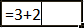Запомните два правила:
Все вычисления в Excel начинаются со знака =
После того, как ввели формулу, нужно нажать кнопку Enter на клавиатуре.
А теперь о знаках, при помощи которых мы будем считать. Также они называются арифметические операторы:
+ сложение
- вычитание
* умножение
/ деление. Есть еще палочка с наклоном в другую сторону. Так вот, она нам не подходит.
^ возведение в степень. Например, 3^2 читать как три в квадрате (во второй степени).
% процент. Если мы ставим этот знак после какого-либо числа, то оно делится на 100. Например, 5% получится 0,05. При помощи этого знака можно высчитывать проценты. Если нам нужно вычислить пять процентов из двадцати, то формула будет выглядеть следующим образом: =20*5%
Все эти знаки есть на клавиатуре либо вверху (над буквами, вместе с цифрами), либо справа (в отдельном блоке кнопок).
Для печати знаков вверху клавиатуры нужно нажать и держать кнопку с надписью Shift и вместе с ней нажимать на кнопку с нужным знаком.
А теперь попробуем посчитать. Допустим, нам нужно сложить число 122596 с числом 14830. Для этого щелкните левой кнопкой мышки по любой ячейке. Как я уже говорил, все вычисления в Excel начинаются со знака «=». Значит, в ячейке нужно напечатать =122596+14830
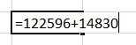И для того, чтобы получить ответ, нужно нажать кнопку Enter на клавиатуре. После чего в ячейке будет уже не формула, а результат.
А теперь обратите внимание вот на такое верхнее поле в программе Эксель:
Это «Строка формул». Она нам нужна для того, чтобы проверять и изменять наши формулы.
Для примера нажмите на ячейку, в которой мы только что посчитали сумму.
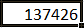И посмотрите на строку формул. В ней будет показано, как именно мы получили данное значение.
То есть, в строке формул мы видим не само число, а формулу, при помощи которой это число получилось.
Попробуйте в какой-нибудь другой ячейке напечатать цифру 5 и нажать Enter на клавиатуре. Затем щелкните по этой ячейке и посмотрите в строку формул.
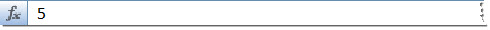Так как это число мы просто напечатали, а не вычислили при помощи формулы, то только оно и будет в строке формул.
Как правильно считать
Только что мы научились считать простейшим способом. Конечно, таким образом можно вычислить и более сложные вещи. Главное, не забывать ставить скобки, где нужно. Например: =((375*230)+(1263-455))/(120*33)
Но, как правило, этот способ «счета» используется не так часто. Существует более продвинутый вариант.
Допустим, есть вот такая таблица:
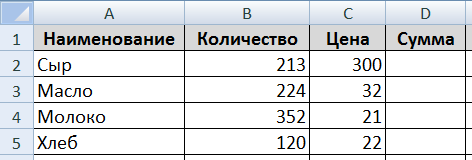В ней нужно посчитать сумму в соответствующем столбике. Получается, нужно умножить количество на цену по каждой позиции. Проще говоря, умножить значения в столбике B на значения в столбике C.
Начну с первой позиции «Сыр». Щелкаю в ячейке D2 и печатаю знак равно.
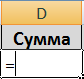Затем нажимаю на ячейку B2, так как нужно ее значение умножить на C2.
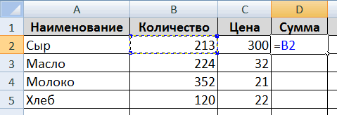Печатаю знак умножения *.
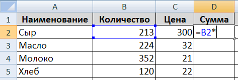Теперь щелкаю по ячейке C2.
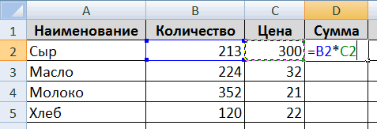И, наконец, нажимаю кнопку Enter на клавиатуре. Все! В ячейке D2 получился нужный результат:
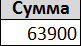Щелкнув по этой ячейке (D2) и посмотрев в строку формул, можно увидеть, как получилось данное значение.
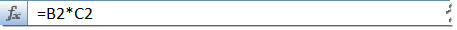Почему именно так считать правильно?! Дело в том, что когда мы вычисляем этим способом, Excel считает не те цифры, которые введены в ячейки, а содержимое ячеек.
Объясню на примере этой же таблицы. Сейчас в ячейке B2 введено число 213. Удаляю его, печатаю другое число и нажимаю Enter.
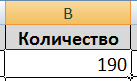Посмотрим в ячейку с суммой D2.
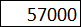Результат изменился. Это произошло из-за того, что поменялось значение в B2. Ведь формула у нас следующая: =B2*C2
Это означает, что программа Microsoft Excel умножает содержимое ячейки B2 на содержимое ячейки C2, каким бы оно не было. Выводы делайте сами :)
Попробуйте составить такую же таблицу и вычислить сумму в оставшихся ячейках (D3, D4, D5).